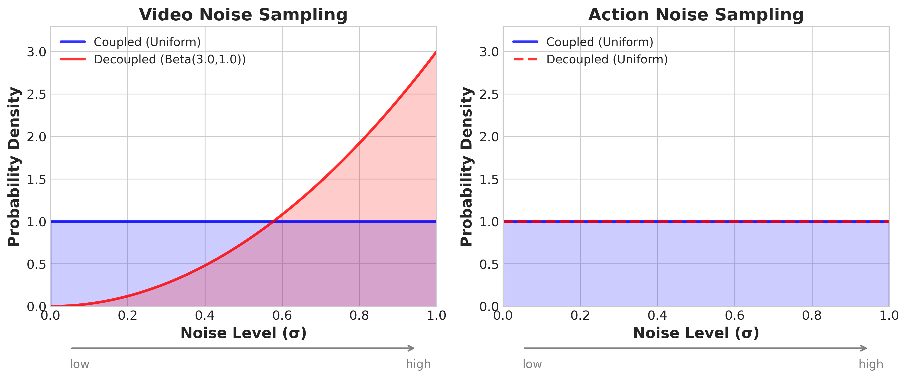

World Action Models are Zero-shot Policies
Contents
1. Quick overview of the paper
DreamZero, transforming the pre-trained video diffusion model into simultaneously predicting future videos and actions World Action Model, and claimed that this "video world modeling + action joint generation" route is better than existing VLA at learning generalizable physical skills from heterogeneous, non-repetitive robot data, and can even achieve significant gains in zero-shot tasks and cross-embodiment transfer.
difficulty rating: ★★★★☆
Requires familiarity with video diffusion models, flow matching, inverse dynamics, closed-loop control system optimization, and VLA/WAM modeling differences.
keywords
Core contribution list
- propose
DreamZero: A 14B WAM that jointly predicts future videos and actions, emphasizing its ability to learn a wide range of skills from heterogeneous, non-repetitive real robot data. - Propose a methodological claim: The advantage of WAM over VLA is not just "one more video branch", but the implicit inverse dynamics of converting action learning into "recovering actions from future visual plans".
- A complete set of real-time inference optimizations is proposed: system-level, implementation-level and model-level acceleration, which reduces the 14B video diffusion control model from 5.7 seconds/block to about 150ms/block, giving 38x acceleration and 7Hz closed-loop control.
- Demonstrates two types of cross-embodiment migration: only 10-20 minutes of video demonstration for robot-to-robot / human-to-robot transfer, and 30 minutes of play data for few-shot new embodiment adaptation.
2. Motivation
2.1 What problem should be solved?
The author believes that the current mainstream route for robot foundation models is VLA: extending pre-trained VLM to action output. This route is very good at semantic generalization, such as understanding complex language, identifying new objects, and aligning "what to do" to language knowledge; but it is not good at "how to do", that is, new physical actions, environmental changes, and fine motor control. The typical counterexample given at the beginning of the paper is: VLA can understand "move the Coke can to Taylor Swift" because it knows who and where Taylor Swift is; but if "untie the shoelace" has never been in the robot data, VLA will often not grow this new action on its own.
Therefore, what the paper wants to solve is not simply "multi-task robot control", but a more acute problem: whether the basic robot model can learn new skills from a data distribution more like the real world without specifically collecting a large number of repeated demonstrations, and generalize it to zero samples on new tasks, new environments, and even new embodiments.
2.2 Limitations of existing methods
- Pre-trained partial static semantics of VLA: What VLM learns from static graphics and text are semantic concepts, not precise spatiotemporal dynamics. The authors explicitly state that this leaves them lacking geometric, dynamic, and motor control representations of action execution.
- VLA often relies on large, repetitive, mission-centric data: To perform stably on robots, existing VLAs often require a lot of embodiment-specific robot data, and these data are usually a large number of repeated demonstrations.
- The old WAM has not fully exploited the generalization potential.: Existing video-action joint models have proven that the world modeling goal is helpful, but many works are still verified in repeated demonstration scenarios, or do not systematically study data diversity, architectural form, and real-time reasoning.
- It is very slow to directly use the video model for closed-loop control: Video diffusion itself requires multi-step denoising and has a large number of parameters, so it is naturally not suitable for millisecond-level reactive control. The authors single this out as one of the three core challenges.
2.3 Solution ideas of this article (high level)
DreamZero's proposition is: Instead of letting the model directly clone the "observed actions", it is better to let it predict future world states and actions at the same time, turning action learning into an implicit inverse dynamics guided by the visual future. Intuitively, if the model already has a good idea of what the world should look like next, then translating this future visual plan into actions should generalize more easily than directly regressing actions from current observations.
To this end, the author uses a pre-trained video diffusion model as the backbone, allowing the model to jointly generate future videos and actions given language, visual history, and ontology status. At the same time, autoregressive video generation, teacher forcing, KV cache, and real observations are used to replace the closed-loop reasoning of predicted frames to avoid the common error accumulation problem in pure video AR.
3. Summary of related work
3.1 Related work of the thesis self-description
- Vision-Language-Action Models: The paper puts RT series, OpenVLA, GR00T, π series, etc. into this line. They put language semantics and action output in the same end-to-end model, but the pre-training priors mainly come from static images and text.
- Video Model-based Robot Policies: One type is to generate a video first and then use inverse dynamics/optical flow/planning to extract actions; the other type is to directly generate video-action jointly. The authors collectively refer to the latter as WAM.
- Alternative world model architecture: In the appendix, the author also specifically compares latent-space world model and 3D point-cloud world model. The author believes that most of these solutions learn from $p(s_{t+1}\mid s_t, a_t)$, and are deployed with inverse dynamics or explicit search; WAM directly learns joint distribution and outputs action trajectories.
3.2 Direct comparison with previous works
| Dimensions | VLA | traditional world model / latent world model | Already have WAM | DreamZero |
|---|---|---|---|---|
| Pre-training prior | Static graphics VLM | Often learn dynamics from scratch | Part of the work has used video diffusion | Wan2.1 I2V-14B pre-training video diffusion |
| learning objectives | Mostly direct action prediction | Learn forward dynamics, and then plan/reverse actions | Video and action combined or coupled | Combine video and action to emphasize implicit inverse dynamics |
| Data preferences | Preference for heavily repetitive, structured presentations | Varies by task | Usually still dominated by robot data | Emphasis on heterogeneous, non-repeating, real long time series data is also available |
| Reasoning style | usually fast | Frequently required MPC / search | Speed and closed-loop capabilities vary greatly | Achieve 7Hz with asynchronous execution + caching + Flash training |
| Thesis claims advantages | Strong semantic generalization | Strong explicit planning | Video priors improve generalization | Stronger to unseen motion / environment / embodiment |
4. Detailed explanation of method
5.1 Method overview
DreamZero's calculation graph can be understood at four levels: "input organization, joint modeling, closed-loop execution, and real-time optimization":
- Input: visual history $\mathbf{o}_{0: l}$, current proprioception $\mathbf{q}_l$, language command $\mathbf{c}$.
- Model: pre-trained video diffusion backbone + a small number of new state encoder, action encoder, and action decoder.
- Goal: Jointly predict future video chunk $\mathbf{o}_{l: l+H}$ and action chunk $\mathbf{a}_{l: l+H}$.
- Deployment: The action block is executed asynchronously. After execution, the real observations are rewritten into the KV cache to replace the visual future just generated by the model, thereby preventing video AR errors from snowballing.
5.2 Method evolution
5.3 Core design and mathematical derivation
Formula 1 shows that DreamZero is actually learning a joint distribution: future videos and future actions are generated together, and this joint distribution can be seen as the product of "video prediction × inverse dynamics".
$$ \pi_0(\mathbf{o}_{l: l+H}, \mathbf{a}_{l: l+H}\mid \mathbf{o}_{0: l}, \mathbf{c}, \mathbf{q}_l) = \pi_0(\mathbf{o}_{l: l+H}\mid \mathbf{o}_{0: l}, \mathbf{c}, \mathbf{q}_l) \cdot \pi_0(\mathbf{a}_{l: l+H}\mid \mathbf{o}_{0: l+H}, \mathbf{q}_l) $$
| $\mathbf{o}_{0: l}$ | A visual history up to the present moment. |
| $\mathbf{o}_{l: l+H}$ | Video observations within a horizon in the future. |
| $\mathbf{a}_{l: l+H}$ | Corresponds to the action block within the horizon. |
| $\mathbf{c}$ | Language instructions. |
| $\mathbf{q}_l$ | Current proprioceptive state. |
Formulas 2 and 3 are standard flow matching training, but made into chunk-wise joint denoising: the video and action are noised together on each chunk and the speed is predicted together.
$$ \mathbf{z}_{t_k}^{k}=t_k\mathbf{z}_{1}^{k}+(1-t_k)\mathbf{z}_{0}^{k}, \qquad \mathbf{a}_{t_k}^{k}=t_k\mathbf{a}_{1}^{k}+(1-t_k)\mathbf{a}_{0}^{k} $$
$$ \mathcal{L}(\theta)= \mathbb{E}_{\mathbf{z}, \mathbf{a}, \{t_k\}} \Bigg[ \frac{1}{K}\sum_{k=1}^{K} w(t_k) \left\| \mathbf{u}_{\theta}([\mathbf{z}_{t_k}^{k}, \mathbf{a}_{t_k}^{k}]; \mathcal{C}_k, \mathbf{c}, \mathbf{q}_k, t_k) -\mathbf{v}^{k} \right\|^2 \Bigg] $$
| $\mathbf{z}_1^k, \mathbf{a}_1^k$ | The clean video latent and clean actions of the $k$ chunk. |
| $\mathbf{z}_0^k, \mathbf{a}_0^k$ | Standard Gaussian noise. |
| $\mathcal{C}_k$ | The clean historical context of teacher forcing is the real latent of all previous chunks. |
| $\mathbf{u}_\theta$ | Joint video-action DiT, output velocity vector. |
| $\mathbf{v}^k$ | Target speed, i.e. clean samples minus noisy samples. |
The core of Flash is not as simple as "a few less steps to denoise", but to change the training distribution to: the action must learn to converge to a value close to clean when the video is still dirty.
Standard DreamZero: $$ t_k^{\text{video}} = t_k^{\text{action}} = t_k, \quad t_k\sim\mathcal{U}(0, 1) $$
DreamZero-Flash: $$ t_k^{\text{video}} = 1-\eta, \quad \eta\sim\text{Beta}(\alpha, \beta), \quad t_k^{\text{action}}\sim\mathcal{U}(0, 1) $$
| Standard settings | Video and action training with noise levels. |
| Flash settings | The video is more noisy and the motion remains at a uniform time step. |
| $\alpha=7, \beta=1$ | The sample configuration of the paper corresponds to a video time step average of about 0.125, that is, the videos of most training samples are "dirty". |
Why does this speed up
If the training distribution is not changed, the video latent is still in the noise area during 1-step inference, and the quality of the visual conditions relied on by the action branch will be very poor. Flash is exposed to this situation of "dirty visuals and accurate actions first" during training, so that 1-step action generation can still work.

5.4 Implementation points
- Multi-view processing is simple: Multi-view is not about changing the backbone structure, but directly splicing different views into a single frame and sending it to the video model.
- Only the video is AR, the action is not pure AR rollout: The author said that this can avoid the error propagation of closed-loop action prediction while retaining the speed benefits brought by KV cache.
- Chunk design and control frequency are strongly bound: AgiBot is 5FPS video, 30Hz motion, 48-step horizon, exactly 1.6 seconds per chunk; DROID is 5FPS video, 15Hz motion, 24-step horizon, also 1.6 seconds. The total context length defaults to 4 chunks, corresponding to 6.6 seconds of visual history.[Appendix Model Details]
- Training update range: Update all DiT blocks, state encoder, action encoder, action decoder; freeze text encoder, image encoder and VAE. The author also specifically mentions that LoRA was tried but not very effective.[Text §4.1]
- Asynchronous execution is a necessary condition: Not to be faster and better looking, but to change the reactive constraint from "reasoning must precede action" to "reasoning only needs to be completed before the current action chunk expires". The target latency given by the author is less than about 200ms.
- action chunk smoothing: The generated action blocks are first upsampled by 2x, then filtered with Savitzky-Golay, and finally downsampled back to the original resolution to specifically suppress high-frequency jitter.[Appendix Real-time execution]
5. Experiment
6.1 Experimental setup
Datasets and Platforms
| platform | data | scale | Main features |
|---|---|---|---|
| AgiBot G1 | Self-collected teleoperation data | ~500 hours, 7.2K episodes, 22 real-life environments | Emphasis on overall heterogeneity, long timing, and multiple subtasks; a single episode averages 4.4 minutes and approximately 42 subtasks |
| DROID / Franka | DROID public data | The paper does not give the total number of hours in the text, but only emphasizes its high heterogeneity. | Used to prove that WAM is also effective on public diverse robot data and support reproducibility |
| Cross-embodiment data | YAM dual-arm robot video; human first-person perspective video | 72 trajectories each; ~20 minutes for YAM, ~12 minutes for humans | Use only video targets without action tags to test the feasibility of video-only transfer |
training configuration
| settings | AgiBot pre-training | DROID pre-training | post training |
|---|---|---|---|
| backbone | Wan2.1-I2V-14B-480P | Continue from pre-trained DreamZero checkpoint | |
| steps | 100K | 100K | 50K per downstream task |
| global batch | 128 | 128 | The text is not in separate columns; inherit similar training configurations |
| Update parameters | All DiT blocks + state/action encoders/decoder; freeze text encoder, image encoder, VAE | ||
| action expression | Use relative joint positions by default; filter idle actions | ||
baseline
The main baselines are two types of VLA: GR00T N1.6 and π0.5. Each baseline is divided into two types of initialization:
- from-scratch: Only take pre-trained VLM weights, without using robot pre-training checkpoint, and compare "apples to apples" with DreamZero.
- from-pretrained: Use the official robot pre-training weights, and then continue training on the author's data.
Evaluation Agreement
- AgiBot seen tasks: 10 seen tasks, 4 robots, 8 rollouts per task, a total of 80 times/checkpoint; divided into three categories: PnP Easy, PnP Hard, and Contact-Rich.[Appendix AgiBot Eval]
- AgiBot unseen tasks: 10 tasks outside the training distribution, such as untie shoelaces, ironing, painting, shaking hands, pulling cart, etc., the same 80 times/checkpoint.[Appendix AgiBot Eval]
- DROID: 20 seen tasks + 20 unseen-verb tasks, each task has 2 rollouts, a total of 80 times; the indicator looks at both task progress and success rate.[Appendix DROID Eval]
- post training task: shirt folding, fruit packing, table bussing; 10 rollouts per task, the indicator is task progress.
Task list given in appendix
| Evaluation set | Mission overview |
|---|---|
| AgiBot seen | PnP Fruit, Taking out Fruit, Wipe the Mess, PnP Fork/Spoon, Put Pen in Holder, Put Cup on Coaster, Stack Bowls/Cups, Folding Shirts, Folding Shorts, Stacking Clothes |
| AgiBot unseen | Untie Shoelaces, Remove/Put Hat, Draw Circle, Take out Straw, Cube Stacking, Painting, Ironing, Shake Hands, Folding (Map), Pulling Cart |
| DROID seen | For example, put marker in box, remove gloves from drawer, put bread into toaster, push toaster lever, pick up apple and put in basket, etc. 20 daily operations |
| DROID unseen verbs | Orient, Fan, Slice, Type, Extricate, Reveal, Match, Maneuver, Affix, Combine, Hook, Pinch, Withdraw, Cinch, Dispense, Bake, Fry, Depress, Elevate, Weave |
6.2 Main results
Q1: Can strategies be learned from heterogeneous and non-duplicate data?
The authors first look at zero-shot environment generalization on the AgiBot seen task. The core conclusion is: DreamZero's average task progress reaches 62.2%, while the best pretrained VLA baseline has only 27.4%; from-scratch VLA is almost zero. The author explains this result as: WAM uses video prediction priors and does not need to hard-learn dynamics from sparse state-action correspondences, so it is better able to digest heterogeneous data.
Q2: Can zero samples be generalized to unseen tasks?
On the AgiBot unseen task, DreamZero achieves an average of 39.5% task progress, while the pretrained VLA baseline is 16.3%, the from-scratch VLA is less than 1%. The author specifically mentions Remove Hat from Mannequin with 85.7% and Shake Hands with 59.2%.
Under the DROID setting, DreamZero is also clearly ahead: 49% task progress, 22.5% success rate; GR00T N1.6 is 31% / 12.5%, π0.5 It's 33% / 7.5%. The author here emphasizes unseen verbs, that is, the verbs in the command themselves do not appear in the training set.
Q3: Can generalization be retained after task-specific post-training?
The author does post-training on three tasks: shirt folding, fruit packing, and table bussing. The paper does not give a precise numerical table of each method in the main text, but the conclusion in the figure is clear: DreamZero at least matches VLA on all three tasks, and is significantly better on fruit packing. The author uses this set of experiments to support that "environmental generalization does not disappear after task-specific post-training".
Q4: Is video-only cross-embodiment transfer useful?
| method | average unseen-task progress |
|---|---|
| DreamZero | 38.3% ± 7.6% |
| DreamZero + Human2Robot transfer | 54.3% ± 10.4% |
| DreamZero + Robot2Robot transfer | 55.4% ± 9.5% |
Just adding 10-20 minutes of video-only demonstration can pull the average progress of unseen tasks from 38.3 to about 54, a relative increase of more than 42%. The author believes that this is a unique extension direction of WAM: it can continue to improve the task understanding of the world model with a large number of human videos without action labels.
Q5: Is few-shot new embodiment adaptation feasible?
The author uses DreamZero-AgiBot checkpoint ~30 minutes, 55 tracks, 11 tasks The post-training of YAM play data shows that language following and certain zero-sample capabilities are still retained on the new dual-arm robot. The results here are mainly qualitative display, and there is no numerical table as in the previous sections, but the argument of this part is: if action learning mainly involves inversely understanding actions from future videos, then when migrating to a new embodiment, the model only needs a small amount of data to calibrate the mapping of "visual future to action".
Q6: Can Flash maintain performance when denoising in fewer steps?
| method | Number of denoising steps | Task Progress | Inference Speed | Speedup ratio |
|---|---|---|---|---|
| DreamZero | 4 | 83% ± 6.1% | 350ms | 1x |
| DreamZero | 1 | 52% ± 10.2% | 150ms | 2.33x |
| DreamZero-Flash | 1 | 74% ± 10.1% | 150ms | 2.33x |
The key information here is: if you directly push DreamZero from 4 steps to 1 step, the performance will drop a lot; while Flash training can bring back most of the 1-step performance, from 52% to 74%. So the value of Flash is not just to be faster, but to make "very few step reasoning" a trainable work point.
6.3 Ablation experiment
| question | settings | result | Author's conclusion |
|---|---|---|---|
| Data diversity | Same 500 hours, repetitive vs diverse | 33% → 50% | For WAM, heterogeneous data is significantly better than duplicate data |
| Model size | DreamZero 5B vs 14B | 21% vs 50% | WAM obviously increases with the scale of video backbone |
| VLA scales up | VLA 5B / 14B | Both are about 0% | Simply increasing VLA capacity cannot solve the problem of heterogeneous data learning. |
| Architecture | bidirectional vs autoregressive | task progress is all 50% | AR is better in terms of smoothness and speed, although the final progress is close |
This set of ablations very directly supports the three methodological claims of the paper: The data must be diverse, the model must be large, and autoregression is more suitable for closed-loop WAM..
6.4 Supplementary experiments and real-time execution details
Real-time execution speed source
| Optimization items | H100 | GB200 |
|---|---|---|
| Baseline | 1x | 1.1x |
| + CFG Parallelism | 1.9x | 1.8x |
| + DiT Caching | 5.5x | 5.4x |
| + Torch Compile + CUDA Graphs | 8.9x | 10.9x |
| + Kernel & Scheduler Opts | 9.6x | 14.8x |
| + Quantization (NVFP4) | Not applicable | 16.6x |
| + DreamZero-Flash | Not applicable | 38x |
The overall latency narrative given by the author is: naive single GPU DreamZero requires approximately 5.7 seconds/action chunk, and after superimposing all optimizations on GB200, it can be reduced to about 150ms / chunk, thus meeting the 7Hz closed-loop control under asynchronous execution.
6. Analysis and Discussion
7.1 Explanations already given in the original text of the paper
- The authors attribute DreamZero's advantage to "the strong prior provided by the video predictions" rather than the larger size of the simple model. Especially for heterogeneous data, WAM does not need to learn action rules from noisy state-action pairs like VLA.
- The author repeatedly emphasizes that DreamZero's action and video predictions are highly aligned, so failure is often not "the action decoder is wrong" but "the video plan is wrong first". This is why they believe that improving the video backbone can directly improve the quality of the strategy.
- The benefits of cross-embodiment transfer are explained by the author as "the world model learns task dynamics first, and action mapping only needs a small amount of new embodiment data to realign".
- AR and bidirectional are close in task progress, but AR is smoother and faster. The authors therefore argue that the core benefit of WAM is not only the final success rate, but also the engineering usability of video-action-speech alignment.
7.2 Limitations of the author's statement
Limitation 1: Inference is still expensive. Even after optimization, DreamZero still requires two GB200s to achieve 7Hz; compared with VLA that can run above 20Hz on consumer-grade GPUs, the deployment threshold is still high.
Limitation 2: Long-term memory is still short. The current available visual context is only about 6.6 seconds, which is far from a truly long-term task.
Limitation 3: High-precision tasks are still difficult. The authors admit that tasks such as key insertion and fine assembly that require sub-centimeter precision are still difficult for behavioral cloning methods.
Limitation 4: The laws of scale are not clear. The paper only gives limited 5B vs 14B and diverse vs repetitive ablation, which is not enough to support the complete scaling law of WAM.
7.3 Failure cases and applicable boundaries
- DreamZero's strongest boundaries right now are: Open environment, unseen actions, cross-embodiment. This is the main battlefield that the paper really wants to prove.
- It is not an explicit planner and does not do test-time MPC/MPPI; it relies on the implicit visual planning brought by the joint video-action generation itself.
- The results of the few-shot adaptation embodiment are still mainly qualitative, indicating that this direction has potential, but it is not yet a fully mature quantitative conclusion.
- The author specifically pointed out that if larger-scale egocentric human video can be accessed in the future, the upper limit of WAM may be much higher than shown in the current experiment, because the scale of video data is naturally much larger than the action annotation robot data.